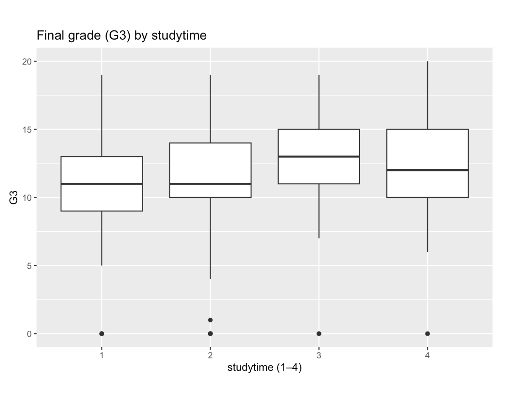

Dataset overview
This project uses the UCI Student Performance dataset, which contains information about secondary school students in Portugal. The dataset includes background information about students (such as family and demographics), their study habits and lifestyle, and their academic performance.
The data originally comes in two separate files: one for Math and one for Portuguese.
I combined both datasets and added a subject column so it is clear which
class each observation comes from. The final dataset includes 1,044 students.
Source: UCI Student Performance Dataset
Bias / limitations
- The data only includes students from a small number of schools in Portugal, so the results may not generalize to other places.
- Some variables (like study time or health) are self-reported, which means they may not be completely accurate.
- This is observational data, so any patterns we see should be interpreted as relationships, not cause-and-effect.
Summary (variables used)
For this analysis, I focused on six variables that capture different aspects of student life and performance:
- G3 – the final course grade (0–20 scale)
- absences – total number of school absences
- studytime – weekly study time (from very low to high)
- health – self-reported health (1 = very poor to 5 = very good)
- sex – student gender
- internet – whether the student has internet access at home
Summary statistics were calculated in R, and the distributions and relationships are shown below.
Distributions
Final grade (G3)

Most students fall in the middle range of grades, with fewer students at the very low or very high ends.
Absences

Absences are very skewed. Most students miss only a few days, but there is a small group with much higher absence counts.
Studytime (1–4)

Studytime is reported on a scale from 1 to 4. Most students report studying at the lower levels.
Health (1–5)

Students generally rate their health between average and good, with fewer reporting very poor health.
Sex

The combined dataset contains slightly more female students than male students.
Internet access

Most students report having internet access at home, which could influence access to learning resources.
Relationships
I looked at a few relationships to see which factors might be connected to final grades.
Final grade by studytime

Students who report higher studytime tend to have slightly higher median final grades.
Click the button to cycle through the relationship plots.
Testable hypotheses
Hypothesis 1
Students who study more (studytime levels 3–4) will have higher average final grades than students who study less (levels 1–2).
Hypothesis 2
A higher number of absences will be associated with lower final grades.
Hypothesis 3
Students with internet access will have slightly higher grades, and the relationship may differ between Math and Portuguese.